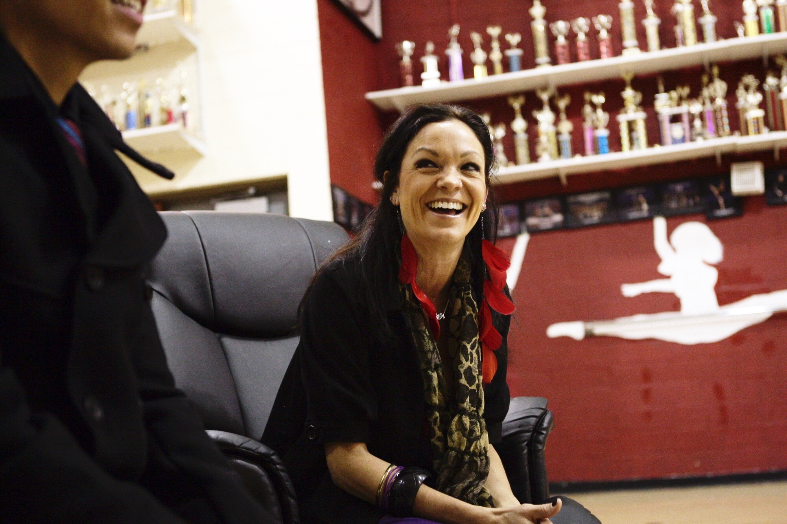

KELLY PALMER
DIRECTOR
Kelly Palmer has been the director of Glendale Dance Drill Team since 1995. She is in charge of a large group of coaches who are alumni to the team. She's highly respected by her fellow coaches, her dancers, her collegues, and throughout the high school dance community.

STEPHANIE BOON
DANCE COACH
Stephanie Boon specializes in militaries and dance drill. She graduated Glendale High School in 2009, as head captain of Glendale Dance Drill Team. She has been a part of staff and has been coaching ever since. Aside from being in charge of several squads, she also manages the finances of the team. She is a very dedicated, passionate, and hard-working coach who constantly motivates and influences her students/dancers. This year, Stephanie Boon graduated from CSULA. CONGRATULATIONS BOONIE!

SEAN KORO
DANCE COACH
Hey! My name is Sean Koro, a proud alumnus of this program, and I have been working with Glendale Dance/Drill since fall of 2011. I am honored to currently be working with Co-Ed Dance.

JORDAN MURRAY
DANCE COACH
I graduated in 2015 and was a senior captain of the small military team. I was given the amazing opportunity to become a part of the coaching staff because of my love and passion for this team. I want to carry on that legacy and pass on that tradition to the next generation. It's my desire to inspire and teach, sharing my experiences that only a few get to feel. Now going into my third year, I can't wait to see what will happen next as there are always obstacles, but overcoming them will be worth it all.

ALLINA URUMIEH
DANCE COACH
Allina Urumieh graduated as a 4 year member in 2013. She was a three year captain, in charge of the Varsity Small Military squad for two. Allina began coaching in the spring of '16 as the Soloist coach and is continuing to lead the soloists this year. She is extremely passionate about being surrounded by students and peers who share the same love for dance and the constant desire to grow, and can't wait to see what this year has to offer!

DANIEL KIM
DANCE COACH
Daniel Kim has been with Glendale Dance Drill Team as a coach since 2015. He graduated Glendale High School in 2011, as the head captain for team 2011. He is currently co-directing Family Bizness along with Marc Miranda. He has worked alongside Dawin, and many other artists in the industry.He is a loving, dedicated person to his students. He is so passionate about dance and aspires to lead this team to new heights.

ANDREW GARCIA
DANCE COACH
I was on the Glendale Dance/Drill Team from 2012-2016. Being one of the two freshmen boys at the time, I had to learn how to keep up and blend in. Eventually, I wanted to do more than just blend in, so I paid for a solo and got to work! By my senior year I was one of ten captains and I was in charge of the boy soloists and Small Dance/Drill. I have created strong bonds and fun memories with my coaches and teammates that I can always look back on. Once high school ended, I auditioned for the EDGE Scholarship Program and got in. I trained in various styles of dance, 5-6 days a week for the past year and I'm continuing to learn how the dance industry works. Now, I'm pursuing a professional career in dance and I'm coaching alongside people I looked up to for the past 5 years. This year, I'm in charge of Small Hip Hop on the dance side and I couldn't be more excited!

MARC MIRANDA
DANCE COACH
Marc Miranda is a professional dancer who loves to educate professional and novice dancers in the art form of dance. He dedicates his time educating his students about leadership and showing them the right path. “I aspire to transform my students into athletes and teach them new skills that they can continuously improve on.” He is currently directing Family Bizness, and started coaching for Glendale Dance Drill Team in June 2015. He graduated from Glendale High School in 2007, and pursued his career as a professional dancer ever since.

JEREMIAH CARO
DANCE COACH
Hi my name Jeremiah Caro! I'm a proud Glendale Alumni excited to be working as a coach for Kelly Palmer. I was a 4 year member, All Male Captain my junior year, and Head Captain my senior year. This year I'll be coaching the All Male team along with Marc, and with 2nd, 4th, and 5th period dance classes with Natalie. We'll be making their routines for all our shows like Variety Show and ATU. We plan to bring a little bit of the drill team experience to the beginning and advanced dance classes hoping to recruit more interested dancers to the team.

MICAH CARO
DRILL COACH
Micah Caro graduated in 2016 after serving four years on the team. She was a two year captain, in charge of Large Dance/Drill and the JV team. She's won multiple National Titles and Sweepstakes in the duration of her high school dance career. Micah began coaching right after she graduated. She is currently coaching for the Drill side of the team-- working with Small Military and Large Hip Hop. Small Military is the elite group of girls, selected from a larger group called Large Military. Large Hip Hop has all the drill girls training in hip hop, preparing them to perform and dance at a higher caliber. Micah choreographs, creates, and cleans these routines throughout the year. She loves teaching and being able to exert her creative energy in something that means so much to her.

ALISSA HIGHGATE
DIRECTOR'S ASSISTANT
My name is Alissa Highgate (Kiki) & I was on the Glendale High Dance/Drill team for 4 years. My first year on the team I started off on JV learning the basics to prepare for the Varsity team the following year. '14-'15 my junior year, I received captainship in charge of Large Dance/Drill alongside Micah Caro. '15-'16 I became the head captain in charge of small, medium & large military. '16-'17 I decided that I loved the team and wanted be more involved by coaching and teaching kids the ropes of the team. My first year coaching I was in charge of the JV Large Military routine. Cleaning, fixing, perfecting this routine so my girls were well prepared for Nationals. They went to Nationals and got 2nd place as a Championship Large Military team. I wish to continue growing as a coach & to keep watching these kids grow as dancers and young adults. This team teaches you life skills that stay with you even after high school. This team has taught me a lot & will continue doing what I love, coaching.

NATALIE HONARCHIAN
DRILL COACH
Hi! My name is Natalie and this will be my first year on Glendale staff. I have been a Glendale Dance Drill member for four years as well as a four year soloist and earned many national titles. I have trained in military style dance as well as lyrical/contemporary. I will be in charge of periods 2, 4 & 5 beginning dance at GHS, managing Roosevelt Middle School Dance, and Large Dance Drill on the drill side. I am so excited to embark on this new journey of coaching as I learn from the more seasoned coaches. As a new member of staff, I will do my best to uphold the prestige and dedication Glendale Dance has conveyed for over two decades.

JARED SINGZON
DRILL COACH
Hi, my name is Jared Singzon! I was a 4 year member who graduated as a 1 year captain in 2016. After that, I started working as a coach for GHS in 2016, and it has been an exciting job with unique tasks. My job for 2017-2018 is to coach the Small Hip Hop squad from the summer all the way till the end of competition season, and managing Roosevelt Middle School's dance program.

MIKE LANCASTER
PHOTOGRAPHER
Mike Lancaster saw his first Glendale High School dance show in May 1998 and was hooked. His twin brother Pat teaches at GHS and is the yearbook and school newspaper advisor. Pat was taking pictures at the early drill team competitions and shows and brought Mike aboard to help. Starting in 2002, Pat stepped back and let Mike shoot the dance team events by himself. Mike has been the team’s photographer ever since and travels to most competitions with them. Because of the thousands of pictures taken each school year, and his brother running the yearbook and newspaper, the GHS Co-Ed Dance team receives unprecedented coverage in the school newspaper and yearbook. His favorite memories are seeing the very first performance of GHS’s very first Co-Ed team at the Fall Rally in 1998 (“Co-Ed Swing”) and then going to Nationals where they won first place, the 2009 military routine performed to his suggested song (“Jai Ho” from “Slumdog Millionaire”), Daniel Kim’s “It Gets Better” all male routine, and Tony Mac’s mind-blowing “TRON” Hip Hop routine in 2011. Mike Lancaster has received the PTSA Continuing Service Award TWICE! He is a proud graduate of John Muir High School in Pasadena, Class of 1976.

IRIS ARCINIEGA
DIRECTOR'S ASSISTANT
GHS Alumna. Class of 2009. Iris joined the GHS dance team in 2006 as a sophomore. She started off as a member of the JV team where she received her first national title. In fall of 2007, Iris was promoted to the varsity team as a junior. She was a part of the Large Military team as well as the coed team. Senior year Iris was promoted to captain, and was a part of the Coed, Large Military, and Hip Hop teams. During her senior year, she dedicated her time figuring out how the Glendale High Dance Team works behind the scenes, from event planning to costume designs. In fall of 2009 Iris was hired on staff as a seamstress, and has now made and altered several of the competition pieces worn throughout the past 8 years! Some of Iris's favorite memories on the team include all the summer beach trips and summer training. As well as her favorite routine in the 2008 Revue " Oh the Places You'll Go!" One of Iris's favorite memories on staff was making the mint colored accent pieces for the all male team of 2017!
CLOE FIELDS
VIDEOGRAPHER
My name is Cloe Fields. You can call me "Clo Clo." I was 4 year member on the team and graduated with the class of 2017. I plan to go to college and major in Film. As a child, I was given a camera, making videos has been a huge part of my life. From using an application on my PC to Adobe and creating funny YouTube videos with my cousin, to now creating weekly and promotional videos for Glendale Dance Team. In my sophomore year, my first video was "A day with Glendale Dance" at CADTD State Championships 2015 with a brief overview of the squads and award ceremony. My second video was "Road to USA Nationals" and that's where it all started. This year, I am in charge of creating new video content for the 2017-2018 team.

JOYCE TIO
WEB DEVELOPER
Hi! My name is Joyce Tio. I was a four-year member of Glendale Dance/Drill Team, and graduated class of 2016. I started off as a JV member, learning the basics of the team, and worked my way up to Varsity. After graduating high school, I often visited the team to support, or help out when needed. I also loved coming back to Roosevelt Middle School to help teach kids in the dance program. Being part of the team, I’m grateful for all the valuable life lessons I’ve learned, and all the friends I’ve met. Wanting to keep in touch and stay connected with dance while trying to pursue a career in technology, I wanted to create a website for Glendale Dance/Drill Team. This year is my first year working for the team as a Consultant. I am in charge of creating, designing, and managing the team’s website, always making sure that the website is up-to-date with the current events and activities of the team. As I expand my skills as a Web Developer, the website will always be a work in progress.

ALEX JURADO
EVENTS & PAPERWORK DIRECTOR
Hi my name is Alex Jurado! I was on the Glendale Dance Team for 4 years. In my sophomore year, I decided that I wanted to be more involved with the team. Beginning in my sophomore year and continuing until today, I have been in charge of doing all paperwork for the team, as well as planning and managing events. My senior year on the team, alongside Kelly Palmer, I planned, managed, and directed our annual competition at GHS, Glendale Games.
This upcoming year I will be in charge of overseeing all the paperwork necessary for the team, such as, fundraising requests, registrations, flyers, and etc. At the same time, I will be attending school in the Fall at Seattle University, in Seattle, WA. I plan to receive a Bachelors of Arts in Humanities for Teaching in 2021. I hope to come back to Glendale High in the future to work as an educator.
I will be commuting between Seattle and Glendale, coming back for special events such as Glendale Games, Glendale Regional, Nationals, etc. I am very thankful and grateful for the opportunity to still be a part of this amazing program, and am very excited for this upcoming year!